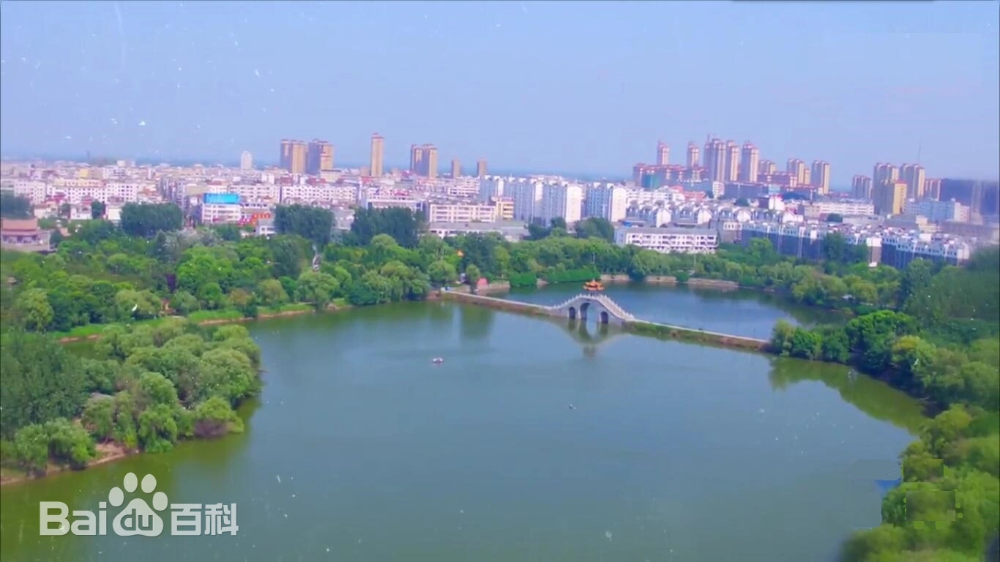
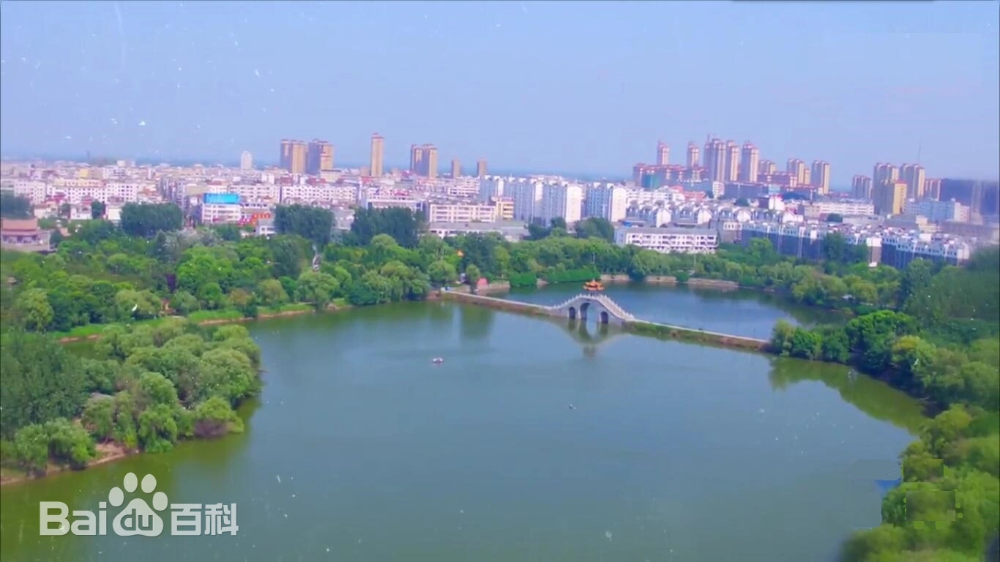

欢迎来到我的网站
固始县，河南省信阳市辖县、河南省财政直管县，位于河南省东南端，豫皖两省交界处，南依大别山，北临淮河，总面积2946平方千米。截至2023年6月，固始县辖3个街道、20个镇、10个乡。 因历史上有四次大规模人口南迁，固始县成为中原地区向闽台一带移民的肇始地和集中地，有“唐人故里，闽台祖地”和“中原第一侨乡”之称，自古皆有"中州首邑”“中州文风甲天下，固始文风甲中州”之美誉。
固始县，河南省信阳市辖县、河南省财政直管县，位于河南省东南端，豫皖两省交界处，南依大别山，北临淮河，总面积2946平方千米。截至2023年6月，固始县辖3个街道、20个镇、10个乡。 因历史上有四次大规模人口南迁，固始县成为中原地区向闽台一带移民的肇始地和集中地，有“唐人故里，闽台祖地”和“中原第一侨乡”之称，自古皆有"中州首邑”“中州文风甲天下，固始文风甲中州”之美誉。
